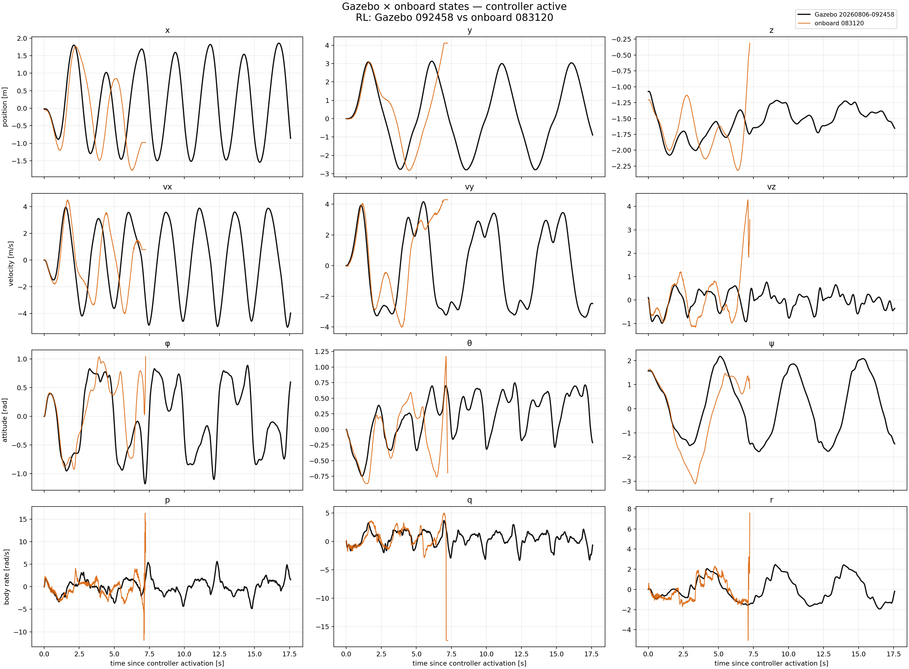
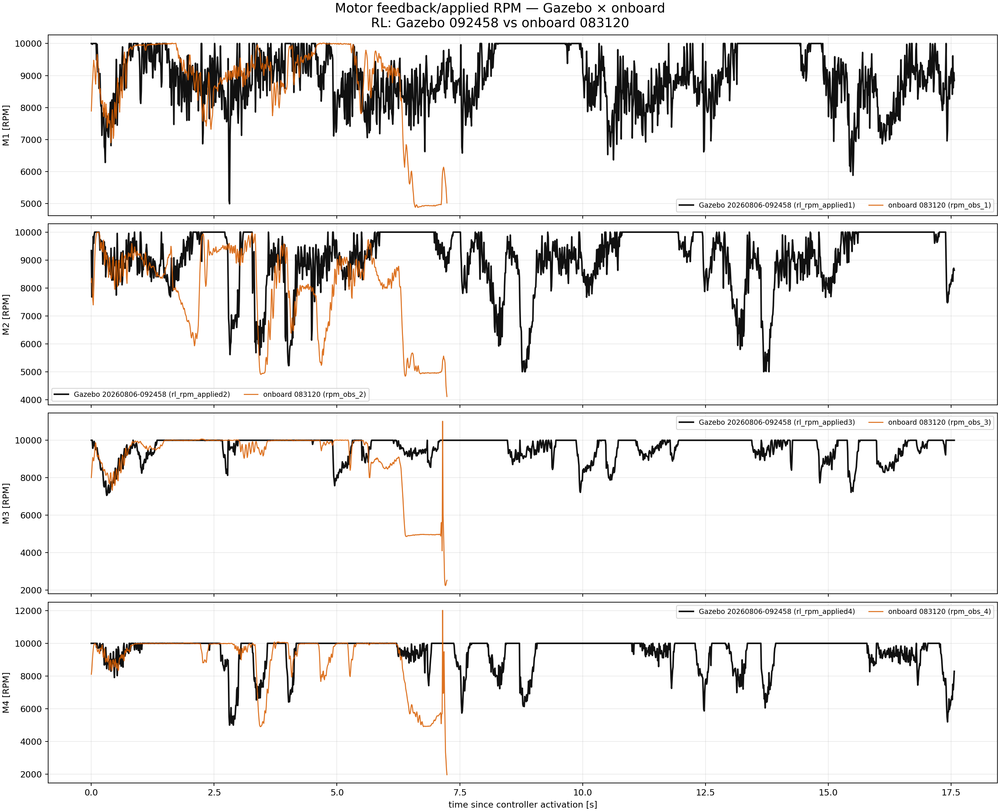
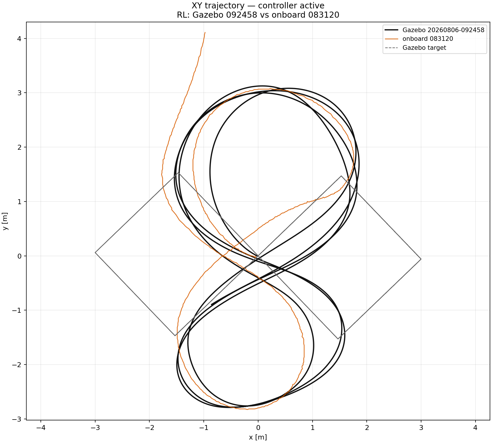

All curves are aligned at controller activation and stop at the end of the usable active/airborne window.
| run | controller | duration [s] | position RMS [m] | rate RMS [rad/s] | RPM tracking RMSE |
|---|---|---|---|---|---|
| Gazebo 20260806-092458 | RL | 17.58 | 4.218 | 1.467 | 0 |
| onboard 083120 | RL | 7.239 | 4.635 | 2.206 | 654.6 |


